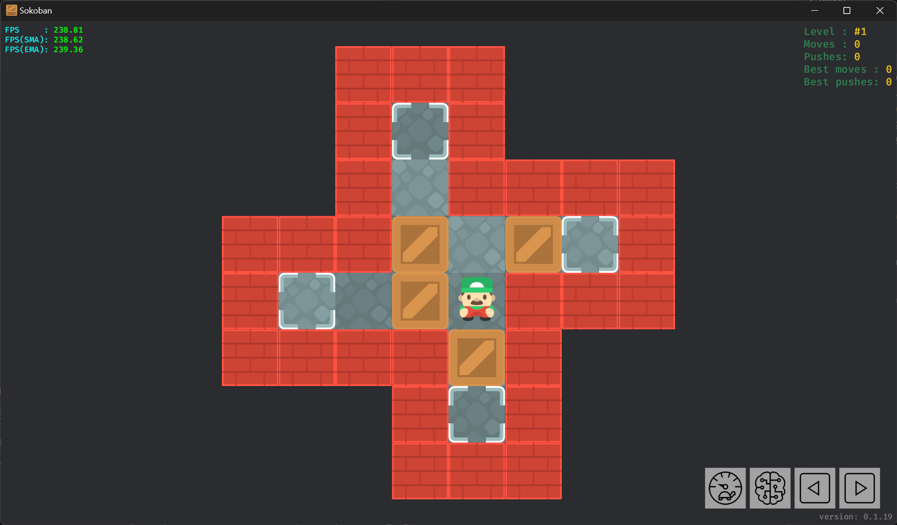
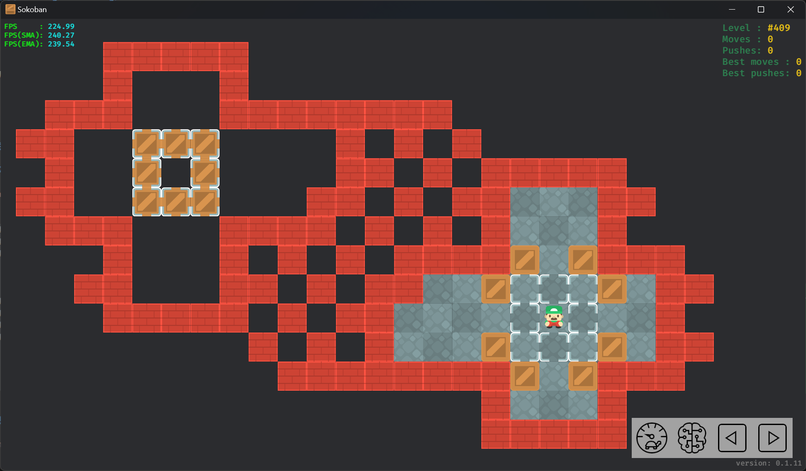
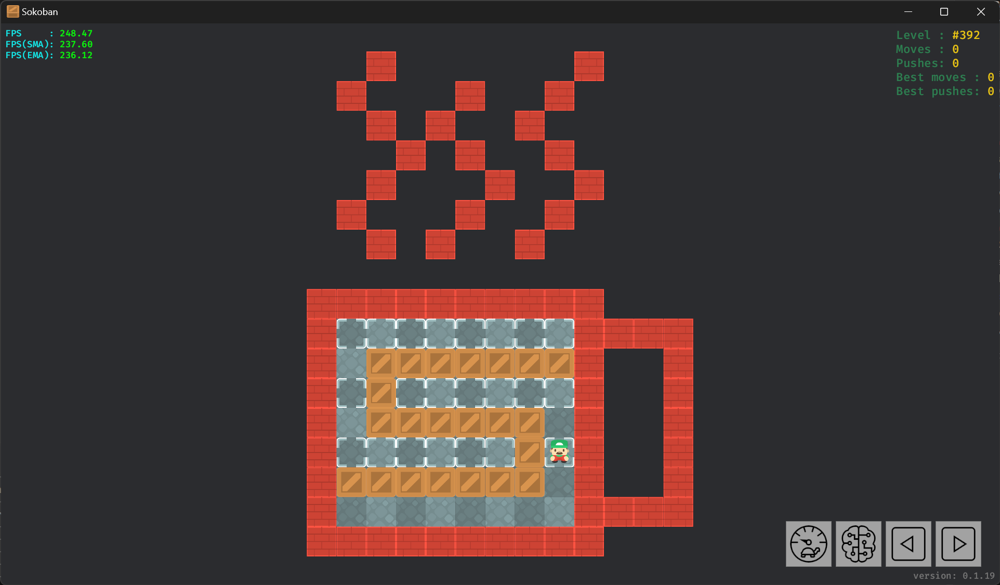
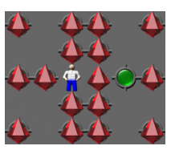

介绍
本文将描述如何实现一个推箱子 📦, 示例代码使用 Rust 语言 🦀 编写.
推箱子的起源
推箱子在 1981 年由日本人今林宏行(いまばやし ひろゆき)所创造, 第一个版本于 1982 年 12 月发行, 名为仓库番, 字面意思为 "仓库管理员" 👷.1 英文名为: Sokoban 或 Soukoban.

截至 2024 年, 最新版本推箱子(みんなの倉庫番)于 2019 年 8 月发行于 PlayStation 4 平台.1

最新版本的推箱在角色控制方面相较于其最初的版本并未见明显改进, 本文后续将介绍一种纯鼠标控制的角色控制方法 🖱️.
为什么通过案例来讲解
本文以推箱子为案例, 深入浅出的描述软件开发过程. 通过案例讲解有以下目的:
- 结合实例的学习可以将知识和应用结合在一起, 使读者无需被 "学这个有什么用?" 所困扰 🤔.
- 提供丰富的实例. 推箱子问题本身还附带了许多子问题, 很适合作为例子使用.
- 众多读者对游戏有浓厚的兴趣 🎮.
为什么选择推箱子作为案例
之所以选择推箱子, 是因为它具有以下特点:
- 规则简单. 可以专注于实现功能, 而非理解复杂的游戏规则和机制.
- 基本功能易于实现, 如推箱子和通关判断.
- 有具有挑战的高级功能. 如纯鼠标控制, 逆推等.
- 有需要深入钻研的求解器, 用于自动求解推箱子关卡.
推箱子的实现既可以简单也可以复杂, 读者可以根据自身的情况选择学习的深度.
内容范围
本文将描述基本功能的具体实现方法, 高级功能的实现方法以及求解器的实现思路.
但本文不涉及以下内容:
- Rust 语言本身. 本文中出现的算法适用于其他编程语言, 但依然会涉及部分 Rust 相关内容的讲解, 如错误处理 (Rust 在这方面和其他语言不太一样), 不感兴趣的读者可以直接跳过这部分内容.
- 游戏引擎. 本文中的推箱子实现并不依赖游戏引擎, 比如有的推箱子实现需要用到射线检测.
- 推箱子的其他变种. 感兴趣的读者可以自行了解, 可以作为一种拓展.
数学公式
关于算法的部分可能会涉及一些数学公式. 这些公式并非直接供读者阅读, 而是为了方便读者在对算法有新的理解后用来验证自己的想法.
项目代码
完整的项目代码位于:
- ShenMian/soukoban: 推箱子相关算法实现.
- ShenMian/sokoban-rs: 推箱子实现, 使用 Bevy 引擎.
拓展资料
推荐视频 🎥:
- 【GM】火遍全球的推箱子，那些你所不知道的故事！· Bilibili: 该视频详细介绍了推箱子的历史和发展.
关卡
XSB 格式
推箱子关卡所使用的 XSB 格式因其简洁和直观而受到了广泛的认可和应用, 最初由 XSokoban 所使用. 该格式使用 ASCII 字符来表示地图元素, 并支持注释和附加元数据.
以关卡 Boxworld #1 为例:

其 XSB 格式关卡的数据如下:
;Level 1
__###___
__#.#___
__#-####
###$-$.#
#.-$@###
####$#__
___#.#__
___###__
Title: Boxworld 1
Author: Thinking Rabbit
上面的关卡数据大致可分为以下几种:
- 第 1 行, 单行注释, 以
;开头. - 第 2-9 行, 地图数据, 使用 ASCII 字符表示.
- 第 10-11 行, 元数据, 包括关卡标题和作者的信息.
地图数据
| ASCII 符号 | 描述 |
|---|---|
<SPACE>/-/_ | 地板 |
# | 墙体 🧱 |
$ | 箱子 📦 |
. | 目标 🎯 |
@ | 玩家 👷 |
+ | 位于目标上的玩家 |
* | 位于目标上的箱子 |
其中地板一共使用了三种符号表示, 是因为连续的空格在某些在线论坛或邮件中可能被截断, 因此使用连字符(-)和下划线(_)来替代.
元数据
第 10 行的 Title: Boxworld 1 可以解释为键为 title (不区分大小写), 值为 Boxworld 1 的元数据.
还有一种用于多行注释的特殊元数据. 内容通过 comment: 和 comment-end: 包裹. 这也是唯一支持值有多行的元数据.
!!! info
多行注释还存在一种以 comment: 和 comment_end: 包裹的写法, 与之前提到的多行注释不同，这种多行注释使用下划线(_)来替代连字符(-)分割单词.
本文将这种格式视为无效格式, 其可能是在批量替换 _ 和 - 字符时意外产生的.
游程编码 🗜️
游程编码(Run-length encoding, RLE)是无损数据压缩的一种形式, 常被应用于推箱子关卡和解决方案的压缩.
###
#.###
#*$ #
# @ #
#####
经 RLE 编码后可得:
3#
#.3#
#*$-#
#--@#
5#
可以看出, 虽然编码后的关卡有更小的体积, 但不再能直观地看出关卡的结构.
RLE 编码后的关卡通常还会使用 | 来分割行, 而非 \n. 使其看上去更加紧凑:
3#|#.3#|#*$-#|#--@#|5#
只需要对原本的语句进行修改即可提供对 | 分割行的支持:
for line in str.lines() { ... SKIP ... }
for line in str.split(['\n', '|']) { ... SKIP ... }
编码
下面是一个简单的 RLE 编码函数的实现:
pub fn rle_encode(str: &str) -> Result<String, EncodeRleError> {
let mut result = String::new();
let mut chars = str.chars().peekable();
let mut count = 0;
while let Some(char) = chars.next() {
if char.is_numeric() {
return Err(EncodeRleError::InvalidCharacter(char));
}
count += 1;
if chars.peek() != Some(&char) {
if count > 1 {
result.push_str(&count.to_string());
}
result.push(char);
count = 0;
}
}
Ok(result)
}
该方法不会使用括号包裹重复的相连子串以提高压缩率.
解码
下面是一个 RLE 解码函数的实现:
pub fn rle_decode(str: &str) -> Result<String, DecodeRleError> {
let mut result = String::new();
let mut length_string = String::new();
let mut iter = str.chars();
while let Some(char) = iter.next() {
if char.is_ascii_digit() {
length_string.push(char);
continue;
}
let mut token = String::new();
if char == '(' {
let mut nesting_level = 0;
for char in &mut iter {
if char == '(' {
nesting_level += 1;
} else if char == ')' {
if nesting_level == 0 {
break;
}
nesting_level -= 1;
}
token.push(char);
}
} else {
token = char.to_string();
}
let length = length_string.parse().unwrap_or(1);
result += &token.repeat(length);
length_string.clear();
}
if !length_string.is_empty() {
return Err(DecodeRleError::EndWithDigits(
length_string.parse().unwrap(),
));
}
if result.contains('(') {
return rle_decode(&result);
}
Ok(result)
}
其他格式
Sok
推箱子程序 Sokoban YASC 专用格式, 兼容 XSB 格式:
Boxworld 1
__###___
__#.#___
__#-####
###b-b.#
#.-bp###
####b#__
___#.#__
___###__
Author: Thinking Rabbit
请参见 Sok format · Sokoban Wiki.
MF8
中文论坛魔方吧1使用 MF8 格式:
[soko=8,8]
__HHH___
__H.H___
__H_HHHH
HHH$_$.H
H._$aHHH
HHHH$H__
___H.H__
___HHH__
[/soko]
特殊关卡
玩家不可达区域存在箱子

#####
# #
### ########
## *** # # #
# * * ## # #####
## *** ## # ## ##
### #### # # # #
# # # # ####$ $###
## ## # ## $...$ ##
##### # ## .@. #
# # # $...$ ##
########$ $###
# #
#####
存在只有空元素的行

# #
# # #
# # #
# # #
# # #
# # #
# # #
-
##########
#........####
# $$$$$$$# #
#.$......# #
# $$$$$$ # #
#......$+# #
#$$$$$$$ # #
# ####
##########
无完整外墙
部分推箱子程序支持无完整外墙的关卡.
在本文中, 这种关卡属于无效关卡. 但可以通过为其添加外墙的方式来转换为有效关卡.

* ** *
**
**@$.*
**
* ** *
拓展资料
参考
表示
表示地图 🗺️
地图共包含 5 种元素, 这些元素可能在一个格子内叠加(比如玩家位于目标上).
最小的数据存储单元字节包含 8 个比特, 足以表示 5 种元素. 因此可以使用一个字节的空间来存储单个地图格子, 其中的每个比特表示一种地图元素.
创建用于表示地图元素的比特位:
use bitflags::bitflags;
bitflags! {
pub struct Tiles: u8 {
const Floor = 1 << 0;
const Wall = 1 << 1;
const Box = 1 << 2;
const Goal = 1 << 3;
const Player = 1 << 4;
}
}
这样可以很方便的表示多种地图元素叠加的情况, 如使用 Tiles::Floor | Tiles::Goal | Tiles::Player 来表示玩家位于目标上, 而目标位于地板上的情况.
使用一维数组来存储地图数据, 使用二维向量(数学)存储地图尺寸.
use nalgebra::Vector2;
pub struct Map {
data: Vec<Tiles>,
dimensions: Vector2<i32>,
// ... SKIP ...
}
使用一维数组而非二维数组是因为一维数组更平坦(flatten), 进行部分操作时更简单高效. 如:
impl Map {
pub fn with_dimensions(dimensions: Vector2<i32>) -> Self {
Self {
data: vec![Tiles::empty(); (dimensions.x * dimensions.y) as usize],
dimensions,
// ... SKIP ...
}
}
// ... SKIP ...
}
因为只需要操作一个数组(而非 n 个数组), 进行调整地图尺寸等操作的代码会更简单高效. 而且能确保动态数组的元素是紧密排列的, 根据数据局部性原理, 读取数据的性能通常会更好.
重载下标运算符, 以便后续直接通过二维坐标访问地图元素.
impl Index<Vector2<i32>> for Map {
type Output = Tiles;
fn index(&self, position: Vector2<i32>) -> &Tiles {
&self.data[(position.y * self.dimensions.x + position.x) as usize]
}
}
impl IndexMut<Vector2<i32>> for Map {
fn index_mut(&mut self, position: Vector2<i32>) -> &mut Tiles {
&mut self.data[(position.y * self.dimensions.x + position.x) as usize]
}
}
表示关卡
关卡数据可分为三个部分: 地图数据, 元数据和注释. 其中注释可以作为元数据.
元数据是一个键值对的集合, 且键不重复, 因此可以使用哈希表(HashMap)来存储.
可以使用下面的结构体存储关卡数据:
use std::collections::HashMap;
pub struct Level {
map: Map,
metadata: HashMap<String, String>,
// ... SKIP ...
}
将地图从关卡中拆分是因为地图涉及大量的关联函数, 如果都放在 Level 里会导致其变得过于庞大.
为了提升代码的可读性和可维护性, 将相关代码拆分到 Map 中, 并将 Level 的 Deref 操作指向 Map. 并通过实现 Deref trait, 使得用户能够透明地引用到 Level 内部的 Map.
构建 🏗️
从 XSB 格式字符串构建关卡
关卡解析可以分为两部分: 地图解析, 元数据和注释解析.
一个 XSB 格式的关卡文件中通常包含多个关卡, 不同关卡之间通过空行分割. 因此解析 XSB 格式的数据大致可分为两个步骤:
- 多个关卡之间的分割.
- 单个关卡的解析.
多个关卡之间的分割
定义关联函数 to_groups, 接受包含多个关卡的字符串, 返回包含单个关卡的字符串切片的迭代器.
impl Level {
// ... SKIP ...
fn to_groups(str: &str) -> impl Iterator<Item = &str> + '_ {
str.split(['\n', '|']).filter_map({
let mut offset = 0;
let mut len = 0;
let mut in_block_comment = false;
let mut has_map_data = false;
move |line| {
len += line.len() + 1;
let trimmed_line = line.trim();
if !in_block_comment && (trimmed_line.is_empty() || offset + len == str.len() + 1) {
let group = &str[offset..offset + len - 1];
offset += len;
len = 0;
if group.is_empty() || !has_map_data {
return None;
}
has_map_data = false;
Some(group)
} else {
if in_block_comment {
if trimmed_line.to_lowercase().starts_with("comment-end") {
// Exit block comment
in_block_comment = false;
}
return None;
}
if let Some(value) = trimmed_line.to_lowercase().strip_prefix("comment:") {
if value.trim_start().is_empty() {
// Enter block comment
in_block_comment = true;
}
return None;
}
if has_map_data || !is_xsb_string(trimmed_line) {
return None;
}
has_map_data = true;
None
}
}
})
}
}
出于性能方面的考虑, 解析关卡数据时应该减少不必要的动态内存分配:
- 由于函数
to_groups仅对输入字符串进行解析, 不涉及修改操作, 因此其参数类型为字符串切片&str, 类似 C++ 中的std::string_view. - 单个关卡的数据是连续的, 因此可以使用字符串切片来表示, 无需再使用
String来存储地图数据.
以上方法通过直接引用原始字符串避免了内存分配, 减少内存占用的同时提高了执行效率. 而且还使得对内存的访问更加局部化.
返回迭代器是因为可以利用迭代器的惰性求值, 来惰性的分割关卡.
这种实现方式有以下优点:
- 支持流式读取并构建关卡. 例如, 通过利用
BufReader1 支持从大文件中逐步地加载关卡数据, 避免了内存的大量占用和性能瓶颈. - 读取第 n 个关卡. 跳过前 n-1 个关卡, 只对第 n 个关卡的数据进行解析. 可以加快从多个关卡中加载单个关卡的速度.
impl Level {
pub fn load(str: &str) -> impl Iterator<Item = Result<Self, ParseLevelError>> + '_ {
Self::to_groups(str).map(Self::from_str)
}
pub fn load_nth(str: &str, id: usize) -> Result<Self, ParseLevelError> {
let group = Self::to_groups(str).nth(id - 1).unwrap();
Self::from_str(group)
}
// ... SKIP ...
}
这样便实现的关卡的惰性解析. 比如搜索完全一致的关卡:
let str = "..."; // 海量关卡
for level in Level::load(&fs::read_to_string(path).unwrap()).filter_map(|x| x.ok()) {
// ... SKIP ...
}
若循环体在循环的过程中通过 break 语句提前退出循环, 未被循环到的关卡将不会被解析, 从而减少不必要的计算.
值得注意的是, 虽然在一些编程语言中 Level::load_nth 的实现是多余的, 但在 Rust 中, 迭代器先 map 后 nth 与先 nth 后 map 并不等价, 前者会执行 n 次 map, 而后者只会执行一次 map, 显著提高了效率.
单个关卡的解析
解析元数据和注释
定义一个关联函数 Level::from_str, 作为 Level 的构造函数. 该函数只负责解析关卡的元数据和注释, 地图数据的进一步解析则由 Map::from_str 负责:
impl Level {
pub fn from_str(str: &str) -> Result<Self, ParseLevelError> {
// ... SKIP ...
Ok(Self {
map: Map::from_str(/* ... SKIP ... */)?,
metadata,
// ... SKIP ...
})
}
// ... SKIP ...
}
关联函数 Level::from_str 需要将元数据存储到 HashMap 中, 同时提取地图数据后续交给 Map::from_str 做进一步解析.
由于地图数据是连续的, 所以也可以使用字符串切片表示.
impl Level {
pub fn from_str(str: &str) -> Result<Self, ParseLevelError> {
let mut map_offset = 0;
let mut map_len = 0;
let mut metadata = HashMap::new();
let mut comments = String::new();
let mut in_block_comment = false;
for line in str.split_inclusive(['\n', '|']) {
if map_len == 0 {
map_offset += line.len();
}
let trimmed_line = line.trim();
if trimmed_line.is_empty() {
continue;
}
// Parse comments
if in_block_comment {
if trimmed_line.to_lowercase().starts_with("comment-end") {
// Exit block comment
in_block_comment = false;
continue;
}
comments += trimmed_line;
comments.push('\n');
continue;
}
if let Some(comment) = trimmed_line.strip_prefix(';') {
comments += comment.trim_start();
comments.push('\n');
continue;
}
// Parse metadata
if let Some((key, value)) = trimmed_line.split_once(':') {
let key = key.trim().to_lowercase();
let value = value.trim();
if key == "comment" {
if value.is_empty() {
// Enter block comment
in_block_comment = true;
} else {
comments += value;
comments.push('\n');
}
continue;
}
if metadata.insert(key.clone(), value.to_string()).is_some() {
return Err(ParseLevelError::DuplicateMetadata(key));
}
continue;
}
// Discard line that are not map data (with RLE)
if !is_xsb_string(trimmed_line) {
if map_len != 0 {
return Err(ParseMapError::InvalidCharacter(
trimmed_line
.chars()
.find(|&c| !is_xsb_symbol_with_rle(c))
.unwrap(),
)
.into());
}
continue;
}
if map_len == 0 {
map_offset -= line.len();
}
map_len += line.len();
}
if !comments.is_empty() {
debug_assert!(!metadata.contains_key("comments"));
metadata.insert("comments".to_string(), comments);
}
if in_block_comment {
return Err(ParseLevelError::UnterminatedBlockComment);
}
if map_len == 0 {
return Err(ParseLevelError::NoMap);
}
Ok(Self {
map: Map::from_str(&str[map_offset..map_offset + map_len])?,
metadata,
// ... SKIP ...
})
}
// ... SKIP ...
}
在处理过程中, 注释内容被特别识别, 并作为键为 comments 的元数据, 一同存储到 Level::metadata 中.
解析地图数据
解析地图数据可以分为以下几个部分:
- 去除多余空白: 首先, 移除每行右侧的空白字符. 随后, 确定地图左侧的最小缩进量(即每行左侧空白字符的最小数量), 并据此剔除左侧的多余空白.
- 确定地图尺寸: 与 MF8 格式不同, XSB 格式并不直接附带地图尺寸数据, 因此需要通过解析关卡地图数据来确定地图尺寸.
- RLE 解码: 如果地图数据经过 RLE 编码, 进行解码操作.
- 解析地图数据: 地图数据使用
Tiles表示, 写入缓冲区中. - 填充地板: 使用洪水填充算法从玩家位置开始, 以墙为边界填充地板.
impl Map {
pub fn from_str(str: &str) -> Result<Self, ParseMapError> {
debug_assert!(!str.trim().is_empty(), "string is empty");
// Calculate map dimensions and indentation
let mut indent = i32::MAX;
let mut dimensions = Vector2::<i32>::zeros();
let mut buffer = String::with_capacity(str.len());
for line in str.split(['\n', '|']) {
let mut line = line.trim_end().to_string();
if line.is_empty() {
continue;
}
// If the `line` contains digits, perform RLE decoding
if line.chars().any(char::is_numeric) {
line = rle_decode(&line).unwrap();
}
dimensions.x = dimensions.x.max(line.len() as i32);
dimensions.y += 1;
indent = indent.min(line.chars().take_while(char::is_ascii_whitespace).count() as i32);
buffer += &(line + "\n");
}
dimensions.x -= indent;
let mut instance = Map::with_dimensions(dimensions);
// Parse map data
let mut player_position: Option<Vector2<_>> = None;
for (y, line) in buffer.lines().enumerate() {
// Trim map indentation
let line = &line[indent as usize..];
for (x, char) in line.chars().enumerate() {
let position = Vector2::new(x as i32, y as i32);
instance[position] = match char {
' ' | '-' | '_' => Tiles::empty(),
'#' => Tiles::Wall,
'$' => {
instance.box_positions.insert(position);
Tiles::Box
}
'.' => {
instance.goal_positions.insert(position);
Tiles::Goal
}
'@' => {
if player_position.is_some() {
return Err(ParseMapError::MoreThanOnePlayer);
}
player_position = Some(position);
Tiles::Player
}
'*' => {
instance.box_positions.insert(position);
instance.goal_positions.insert(position);
Tiles::Box | Tiles::Goal
}
'+' => {
if player_position.is_some() {
return Err(ParseMapError::MoreThanOnePlayer);
}
player_position = Some(position);
instance.goal_positions.insert(position);
Tiles::Player | Tiles::Goal
}
_ => return Err(ParseMapError::InvalidCharacter(char)),
};
}
}
if instance.box_positions.len() != instance.goal_positions.len() {
return Err(ParseMapError::BoxGoalMismatch);
}
if instance.box_positions.is_empty() {
return Err(ParseMapError::NoBoxOrGoal);
}
if let Some(player_position) = player_position {
instance.player_position = player_position;
} else {
return Err(ParseMapError::NoPlayer);
}
instance.add_floors(instance.player_position);
Ok(instance)
}
// ... SKIP ...
}
错误处理
在解析地图数据的过程中, 应该关注可能发生的错误, 并进行相应的检查.
幸运的是, 许多常见的错误都可以在解析数据的同时顺便进行排查, 这样只会带来极小的额外开销, 从而确保地图的正确性和完整性.
#[derive(Error, Clone, Eq, PartialEq, Debug)]
pub enum ParseLevelError {
// ... SKIP ...
}
#[derive(Error, Clone, Eq, PartialEq, Debug)]
pub enum ParseMapError {
// ... SKIP ...
}
impl From<ParseMapError> for ParseLevelError {
fn from(error: ParseMapError) -> Self {
ParseLevelError::ParseMapError(error)
}
}
重载 ParseMapError 到 ParseLevelError 的转换, 以便 Level::from_str 直接返回 Map::from_str 中的错误.
遵循 Rust API Guidelines (C-GOOD-ERR)2 的建议, 应该为错误类型实现 Debug / Error 和 Display 等 trait. 本文使用库 thiserror 3 来自动完成这一步骤.
从解决方案构建关卡
解析地图数据可以分为以下几个部分:
-
确定地图尺寸: 地图的尺寸等于玩家移动范围加上 1, 以包含外墙.
-
模拟玩家移动: 模拟玩家的移动, 并记录三组数据, 分别是: 当前箱子位置和箱子初始位置.
玩家移动到的位置设为地板. 若玩家推动了箱子, 且该箱子移动前的位置不再当前箱子位置中, 添加到箱子位置中. 箱子当前位置在模拟结束后, 当前箱子位置即最终箱子位置. 若解决方案正确, 那么最终箱子位置与目标位置相同.
-
添加墙壁: 在地板周围添加墙壁, 以形成完整的关卡结构.
-
验证解决方案: 在构建的关卡里验证解决方案的有效性. 若验证失败, 则表示解决方案不正确.
impl Map {
pub fn from_actions(actions: &Actions) -> Result<Self, ParseMapError> {
let mut min_position = Vector2::<i32>::zeros();
let mut max_position = Vector2::<i32>::zeros();
// Calculate the dimensions of the player's movement range
let mut player_position = Vector2::zeros();
for action in &**actions {
player_position += &action.direction().into();
min_position = min_position.zip_map(&player_position, |a, b| a.min(b));
max_position = max_position.zip_map(&player_position, |a, b| a.max(b));
}
// Reserve space for walls
min_position -= Vector2::new(1, 1);
max_position += Vector2::new(1, 1);
if min_position.x < 0 {
player_position.x = min_position.x.abs();
}
if min_position.y < 0 {
player_position.y = min_position.y.abs();
}
let dimensions = min_position.abs() + max_position.abs() + Vector2::new(1, 1);
let mut instance = Map::with_dimensions(dimensions);
// The initial position of boxes are the box positions, and the final position
// of boxes are the goal positions
let mut initial_box_positions = HashSet::new();
let mut final_box_positions = HashSet::new();
let mut final_player_position = player_position;
for action in &**actions {
instance[final_player_position] = Tiles::Floor;
final_player_position += &action.direction().into();
if action.is_push() {
// The player pushed the box when moving, which means there is a box at the
// player's current location
if !final_box_positions.contains(&final_player_position) {
final_box_positions.insert(final_player_position);
initial_box_positions.insert(final_player_position);
}
final_box_positions.remove(&final_player_position);
final_box_positions.insert(final_player_position + &action.direction().into());
}
}
instance[final_player_position] = Tiles::Floor;
let box_positions = initial_box_positions;
let goal_positions = final_box_positions;
if box_positions.is_empty() {
return Err(ParseMapError::NoBoxOrGoal);
}
instance[player_position].insert(Tiles::Player);
for box_position in &box_positions {
instance[*box_position].insert(Tiles::Box);
}
for goal_position in &goal_positions {
instance[*goal_position].insert(Tiles::Goal);
}
instance.add_walls_around_floors();
instance.player_position = player_position;
instance.box_positions = box_positions;
instance.goal_positions = goal_positions;
// Verify solution
let mut level = Level::from_map(instance.clone());
for action in &**actions {
level
.do_move(action.direction())
.map_err(|_| ParseMapError::InvalidActions)?;
}
Ok(instance)
}
}
性能测试
TODO: 附上性能基准测试结果.
标准化
有些关卡为了美观会在原关卡的基础上添加一些装饰, 这些装饰性的元素在本质上并不影响关卡的解法.
标准化的目的是移除这些与求解无关或冗余的元素.
理想状态下, 任何具有相同步数最优解的关卡都可以被标准化为同一个关卡. 理论上可以先对关卡解析自动求解, 获得最优解决方案后再从解决方案构建关卡来得到标准化后的关卡.
但对于 NP 难1的推箱子问题来说, 自动求解最优解决方案通常是耗时且困难的, 因此还需要一种不依赖于关卡解决方案的高效(多项式时间内得出结果)标准化方法. 尽管该方法得到的标准化结果并不完美.
关卡的标准化可以分为以下几个步骤:
-
将不可移动的箱子变为墙.
箱子可能默认就处于死锁状态, 可以当作墙体处理.
-
将无需使用的地板变为墙.
如果一个地板被三面墙包围, 属于死胡同, 可以当作墙体处理.
-
移除无法到达的墙.
部分墙无法与玩家产生交互, 因此移除这部分墙不影响关卡的解决方案.
-
统一外墙形式.
外墙有不同的包围类型, 如:
### #@$.# ### ##### #@$.# #####应该统一为其中一种类型, 通常使用下面的类型.
-
移除无法到达的箱子.
部分箱子无法与玩家产生交互, 因此移除这部分箱子不影响关卡的解决方案.
-
收紧地图尺寸.
地图中的元素被删除可能导致地图尺寸缩小.
-
对旋转和翻转标准化.
将经过不同旋转和翻转的关卡标准化为同一个关卡. 一个简单的方法是计算不同旋转和翻转后地图的哈希值，选择哈希值最小的版本.
-
玩家初始位置标准化. (注意: 可能移动玩家位置, 进而改变关卡的解决方案)
需要对先对玩家的位置进行标准化. 因为即使玩家位置不一样, 但都在同一个区域也可以转变为同一个关卡. 一个简单的玩家位置标准化方法是将玩家的位置设为玩家可达区域的位置中 Y 坐标最小, 其次 X 坐标最小的位置.
激进的标准化
激进的标准化可能改变关卡的解. 以最简单的关卡为例:
#####
#@$.#
#####
因为玩家开始的位置三面有墙, 位于死胡同, 只能向右移动. 得到结果:
#####
# @*#
#####
玩家左侧死胡同属于无用的区域, 使用墙体填充. 玩家右侧位于目标上的箱子处于死锁状态, 属于无用的箱子和目标, 使用墙体填充. 最后移除多余的墙体得到激进的标准化结果:
###
#@#
###
这是一个最简单的非标准关卡, 因为其没有箱子和目标, 解为空.
求解器(Solver)
顾名思义, 求解器是用于自动求解推箱子关卡的程序.
本文不会详细介绍搜索算法的工作原理和实现细节, 相比推箱子求解, 一般的寻路算法更适合读者理解搜索算法.
图(Graph)
以下面关卡为例:
######
# @$.#
######
该关卡仅存在三种状态, 分别为:
A: B: C:
###### ###### ######
# @$.# #@ $.# # @*#
###### ###### ######
为了更直观地展示这些状态之间的转换关系, 可以用图的形式表示为:
graph TD
A-->|l| B
B-->|r| A
A-->|R| C
C-->|L| A
这是一个以状态(State)为节点(Vertex), 动作(Action)为边(Edge)的有向图.
其中 $A$ 为初始状态(Initial state, IS), $C$ 为目标状态(Goal state, GS), l 和 r 分别表示玩家向左和向右移动, R 和 L 分别表示玩家向右推动和向左拉动.
理论上, 状态 $C$ 还可以衍生出更多子状态, 但因为其是目标状态, 搜索算法无需继续搜索, 因此这里不再展开.
求解器的工作是进行空间状态搜索1, 即首先根据初始状态生成推箱子关卡的图, 然后在这个图中寻找从初始状态到目标状态的路径. 以上图为例, 就是寻找从状态 $A$ 到状态 $C$ 的路径, 即 R.
寻路算法是在路径点组成的图中寻找一条从初始位置到目标位置的路径.
求解器则是在状态组成的图中寻找一条从初始状态到目标状态的路径, 即移动箱子的顺序.
下面将详细探讨如何利用搜索算法来找到这条路径.
搜索算法
-
广度优先搜索算法(Breadth-first search, BFS)2.
-
A* 搜索算法3
A* 与 BFS 在最坏情况下的时间复杂度均为 $O(b^d)$. 但 A* 算法是一种最佳优先搜索(Best-first search)算法, 会优先探索最有希望的节点.
-
IDA* 搜索算法4
相比空间复杂度为 $O(b^d)$ 的 A* 算法, IDA* 算法的空间复杂度为 $O(d)$.
-
FESS 搜索算法5
A* 和 IDA* 算法只通过单个启发式函数值值来选择下一个探索的节点.
虽然可以通过计算出多个启发式函数值, 将它们融合为单个启发式函数值, 以同时利用多种启发式函数, 但由于多个启发式函数值被融合为了一个, 因此无法区分单个启发式函数值的变化趋势. FESS 算法则在这方面做出了改进. 本文第一作者 Yaron Shoham 还将该算法应用在了求解器 Festival6 上, 并取得了极佳的效果7.本文不会进一步探讨该算法, 感兴趣的读者可以阅读相关论文.
BSF/A*/IDA* 算法均可以用于搜索最短路径, 即最佳解决方案. 推箱子问题是PSPACE完全(PSPACE-complete)的, 使用 BSF 这种非启发式算法是难以搜索到解决方案的.
本文将描述如何创建一个基于 A* 搜索算法的求解器.
表示状态
顾名思义, 状态用于表示关卡的状态.
pub struct State {
pub player_position: Vector2<i32>,
pub box_positions: HashSet<Vector2<i32>>,
}
可以看出状态仅包含了玩家的位置和箱子的位置, 因为玩家和箱子是关卡中可移动对象. 保存它们的位置足以描述整个关卡的状态. 其他元素, 如墙壁/目标位置等是静态的，它们的位置不会改变, 因此只需要从关卡的初始状态中获取它们的位置.
TODO: 启发式函数 -> 只关心箱子位置 -> 仅当箱子位置改变时产生新的状态.
状态是图里的节点, 从初始状态开始探索其相邻的节点, 即邻域.
通过下面函数来生成当前状态的派生状态, 即相邻的状态:
impl State {
pub fn successors(&self, solver: &Solver) -> Vec<State> {
// ... SKIP ...
}
}
通过启发式算法优先探索最接近目标状态的节点.
TODO
记录已探索过的节点.
复杂推箱子关卡的图可能存在环(Loop), 这也是为什么推箱子关卡的状态可以用图表示, 却无法用树(Tree)表示的原因.
割点
通过割点可以在常量时间内判断两点是否是连通的.
优化器(Optimizer)
对已知的路径进行局部搜索(local search), 以寻找更佳的路径.
TODO: 速度优先的搜索策略 + 优化器优化 = 快速得到一个不那么差的解决方案.
搜索策略
什么是最短路径?
在常见的寻路算法中, 最短可能是指距离最短, 也可能是指时间最短.
在推箱子中也是如此, 既有移动数最优解决方案, 也有推动数最优解决方案.
策略
推箱子求解器通常有以下策略:
Fast: A* 算法可以用于搜索最短路径, 但不一定只能搜索最短路径. 通过提高启发式函数的权重可以提高搜索到任何解决方案的效率, 即速度.OptimalPush: 搜索推动数最少的解决方案.OptimalMove: 搜索移动数最少的解决方案.- 搜索推动数最少其次移动数最少的解决方案.
- 搜索移动数最少其次推动数最少的解决方案.
表示
pub enum Strategy {
/// Search for any solution as quickly as possible
Fast,
/// Find the push optimal solution
OptimalPush,
/// Find the move optimal solution
OptimalMove,
}
启发式函数(Heuristic function)
启发式函数用于指导搜索算法的搜索方向.
A* 算法的核心是估价函数 $f$, $f(n)=g(n)+h(n)$. 其中:
- $n$ 是某个状态.
- $g(n)$ 为从初始状态到 $n$ 状态的实际代价.
- $h(n)$ 为从 $n$ 状态到目标状态的代价的估计代价.
搜索最短路径就是指搜索总代价(即 $f$ 的函数值)最小的路径. 以推箱子为例:
- 代价可能指玩家移动数, 也可能指箱子推动数, 这取决于求解器的搜索策略. 因此针对不同的搜索策略, 于代价相关的函数 $g$ 和 $h$ 的实现不同.
- 路径就是解决方案.
该算法总是能搜索到最优路径, 前提是启发式函数 $h$ 满足容许性(Admissible)1.
容许性(Admissible)
启发式函数满足容许性, 才能确保结果是最优的. 若函数 $h$ 满足以下条件则满足容许性:
$$ \forall n,h(n) \leq h^*(n) $$
其中 $h^*(n)$ 是从 $n$ 状态到目标状态的实际代价.
对于最优路径上的任意状态 $m$, 到目标状态的实际代价总是为 $h^(m)$. 若 $h(n) > h^(n)$, 在搜索 $g$ 函数值相同的节点时, 一定会跳过最优路径, 进而返回非最优路径.
函数 $h$ 不满足容许性也可能返回最优路径, 因为 $h(n) > h^*(n)$ 不一定恒成立.
设计的方向
假设 $h(n) = 0$, 此时函数 $h$ 满足容许性, 但不再能启发搜索方向, 该情况下的 A* 算法也被称之为相同代价搜索(Uniform-cost search, UCS), 下一个搜索节点的优先级为 $f(n) = g(n)$, 行为与 BFS 类似. 虽然可以得到最优解, 但无法得到 "启发式" 带来的任何的优化.
理想状态下 $h(n) = h^(n)$, 但这不可能. 因此函数 $h$ 应该在满足容许性的前提下, 尽可能的接近 $h^(n)$.
对于网格上的寻路算法, 一种启发式函数的实现是计算当前位置和目标位置之间的曼哈顿距离. 相比之下, 推箱子的启发式函数实现并不那么显而易见.
理想状态下, 对于任意关卡的任意解决方案 $n_1, n_2, ... , n_k$:
- $h(n_i) > h(n_{i+1})$
- $h(n_1) = 0$
- $h(n_k) = h^*(n_k)$
预计算
启发式函数计算的适合通常会假设地图上只有一个箱子, 因为这样计算出的结果与箱子的位置无关. 在搜索状态的时候箱子的位置会不断发生改变, 但是启发式函数的值不变.
因此可以提前计启发式函数的值, 供后续搜索时使用.
下界(Lower bounds)
下界是一个箱子到任何目标的最短距离.
根据搜索策略有两种下界:
- 推动下界.
- 移动下界.
其中推动下界可以用于搜索最优移动数解决方案, 反之则不行. 因为推动下界一定小于移动下界.
最简单的推动下界计算方法是计算每个箱子到最近目标的曼哈顿距离2. 曼哈顿距离也是网格中寻路常用的启发式函数的计算方法.
TODO: 使用二维数组而非 HashMap 来存储下界.
fn manhattan_distance(a: Vector2<i32>, b: Vector2<i32>) -> u32 {
(a.x - b.x).abs() + (a.y - b.y).abs()
}
let mut lower_bounds = HashMap::new();
for x in 1..self.map.dimensions().x - 1 {
for y in 1..self.map.dimensions().y - 1 {
let position = Vector2::new(x, y);
if self.level[position].intersects(Tiles::Goal) {
lower_bounds.insert(position, 0);
continue;
}
if !self.map[position].intersects(Tiles::Floor) {
continue;
}
let lower_bound = self
.map
.goal_positions()
.iter()
.map(|box_position| manhattan_distance(*box_position, &position))
.min()
.unwrap(); // 地图上的目标不可能为空 => 迭代器不可能为空 => `Iterator::min` 不可能返回 `None`
lower_bounds.insert(position, lower_bound);
}
}
lower_bounds
上面算法的时间复杂度为 $O(n * m * k)$, 其中 $n$, $m$ 为地图尺寸, $k$ 为目标数量.
其中函数 manhattan_distance 的时间复杂度为 $O(1)$.
该方法的有点是计算十分快速, 缺点是其忽视了墙体对玩家和箱子的阻碍, 可能严重低估了推动下界.
实现
启发式函数需要计算当前状态到目标状态的下界.
所有箱子所在位置的下界之和.
impl State {
fn calculate_lower_bound(&self, solver: &Solver) -> usize {
self.box_positions
.iter()
.map(|box_position| solver.lower_bounds()[&box_position])
.sum()
}
// ... SKIP ...
}
特征
除了通过下界计算得到的启发式函数值, 还有一些特征可以帮助在
还有一些特征的值可以附加在启发式函数值上, 在确保启发式函数值保持其容许性的前提下, 优先搜索有相同启发式函数值的状态中选择更接近目标状态的节点.
连接性特征
玩家全部可达区域可能会被箱子分割为多个区域. 这些区域的数量越少意味着玩家可以移动的范围越大.
因为区域是被箱子分割的, 因此只需要检测箱子周围的点所属的区域即可获得独立的区域数. 通过判断箱子在割点上的情况快速判断独立区域的数量.
资源
- http://sokobano.de/wiki/: 德国推箱子 Wiki.
- https://www.sokoban-online.de/: 推箱子软件 JSoko.
- https://sourceforge.net/projects/sokobanyasc/ 推箱子软件 SokobanYASC.
- https://sokoban.cn/: 中国推箱子在线平台.
术语表
| 中文 | 英文 |
|---|---|
| 求解器 | solver |
| 解/解决方案 | solution |